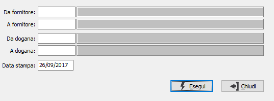

Stampa lettere di revoca
Questa funzione permette di stampare al momento in cui l’azienda eccede il plafond richiesto ad inizio anno, le lettere di comunicazione ai vari fornitori per avvisarli che i documenti emessi a loro carico dovranno essere sottoposti alla normale applicazione Iva.

DA FORNITORE: indicare il codice del fornitore da cui si intende iniziare la stampa delle lettere di revoca; confermando a vuoto la stampa inizia dal primo codice valido. Sul campo è attiva la ricerca F9
A FORNITORE: indicare il codice del fornitore con cui si intende far terminare la stampa delle lettere di revoca; se si conferma a vuoto la stampa termina con l'ultimo codice valido. Sul campo è attiva la ricerca F9.
DA DOGANA: indicare il codice della dogana da cui si intende iniziare la stampa delle lettere di revoca; confermando a vuoto la stampa inizia dal primo codice valido. Sul campo è attiva la ricerca F9
A DOGANA: indicare il codice della dogana con cui si intende far terminare la stampa delle lettere di revoca; se si conferma a vuoto la stampa termina con l'ultimo codice valido. Sul campo è attiva la ricerca F9.
DATA STAMPA: Indicare la data in cui vengono stampate le lettere di revoca (viene proposta la data di sistema, modificabile). Viene controllato anche che la lettera sia stata effettivamente inviata in una data precedente a quella indicata in questo campo.